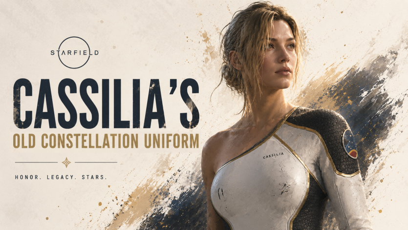

MOD Archive
Starfield
Mods
Full catalog of gameplay systems, world interaction mods, weapons, equipment and character customization work.
Nexus Telemetry
Nexus Releases
Nexus Mods releases with daily downloads, total downloads and endorsements.
| Mod | Daily | Total | Unique | Endorse |
|---|
Bethesda Creations
Creation Metrics
Only confirmed Creations metrics are shown here until the platform exposes reliable cover data.
| Creation | Likes | Downloads | Plays | Library Adds |
|---|